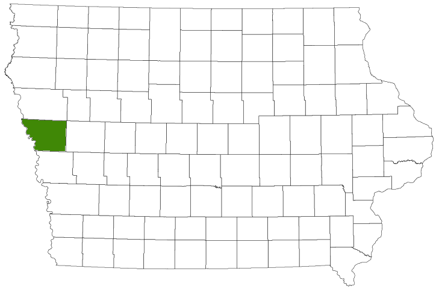
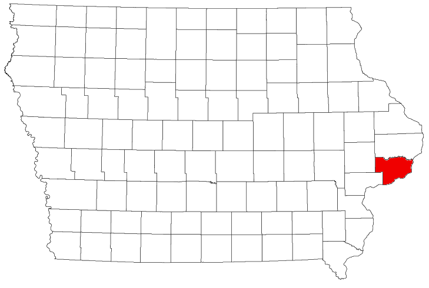
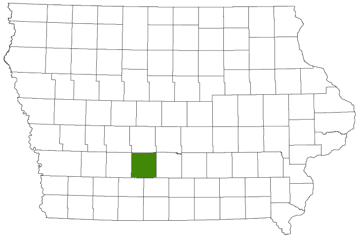
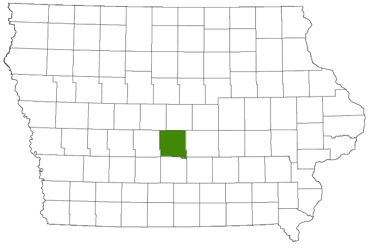

Scott County can do better
see how we measure up...
Population Growth
2010 to 2016
%
14.0%
Johnson County
11.9%
Polk County
6.1%
Linn County
5.5%
United States
4.4%
Scott County
Levy RatesA property tax or millage rate is an ad valorem tax on the value of a property, usually levied on real estate. The tax is levied by the governing authority of the jurisdiction in which the property is located.
tax %
0
Monona County #62
P 8,979

0
Scott County #61
P 172,126

0
Madison County #60
P 15,753

0
Linn County #56
P 219,916
0
Johnson County #31
P 130,882
0
Polk County #19
P 467,711

Public Safety
2016 Comparison County % of overall crime• Overall Crime• Property Crime• Violent Crime
Johnson County 2.08%
Black Hawk County 2.76%
Linn County 3.02%
Polk County 3.21%
Scott County 3.82%
%
stats
people
65-YEARS-OLD & OLDER
Johnson County 10.8%
Polk County 12.3%
Linn County 14.9%
Scott County 15.2%
people
LIVING IN POVERTY
Linn County 10.0%
Polk County 10.9%
Iowa State 11.8%
Scott County 13.3%
people
WITH BACHELOR'S DEGREE
Johnson County 52.4%
Polk County 35.6%
Linn County 32.3%
Scott County 31.9%